|
4-1-4-1
|
Cabo Verde | 0 | - | 0 | Saudi Arabia |
4-4-2
|
| HT 0-0 | ||||||
|
FIFA World CupSaturday 27 June 2026
|
||||||
- Venue
- Houston Stadium
- Attendance
- 68,278
- Referee
- François Letexier
Yellow card8'
Wagner Pina
- 2
Substitution61'
Dailon Livramento
Nuno da Costa
Willy Semedo
Hélio Varela
- 2
Substitution71'
Jamiro Monteiro
Laros Duarte
Ryan Mendes
Garry Rodrigues
Substitution90+4'
Wagner Pina
Steven Moreira
Whistle45+7'
45+7'
Yellow card4'
Saud Abdulhamid
Substitution33'
Hassan Al Tambakti
Ali Lajami
Substitution46'
Abdullah Al Khaibari
Musab Al Juwayr
- 2
Substitution66'
Salem Al Dawsari
Mohammed Abu Al Shamat
Sultan Mandash
Abdullah Al Hamddan
Yellow card67'
Nasser Al Dawsari
Substitution82'
Nawaf Bu Washl
Moteb Al Harbi
Yellow card90+3'
Feras Al Brikan
Cabo Verde | |
|---|---|
Goalkeeper | |
| 1 | Vozinha |
Defender | |
| 3 | Diney Borges |
| 4 | Pico Lopes |
| 8 | João Paulo |
| 24 | Wagner Pina 8'90+4' |
Midfielder | |
| 6 | Kevin Pina |
| 10 | Jamiro Monteiro 71' |
| 14 | Deroy Duarte |
| 17 | Willy Semedo 61' |
| 20 | Ryan Mendes 71' |
Forward | |
| 19 | Dailon Livramento 61' |
Substitutes | |
| 11 | Garry Rodrigues 71' |
| 15 | Laros Duarte 71' |
| 21 | Nuno da Costa 61' |
| 22 | Steven Moreira 90+4' |
| 26 | Hélio Varela 61' |
Saudi Arabia | |
Goalkeeper | |
| 21 | Mohammed Al Owais |
Defender | |
| 4 | Abdulelah Al Amri |
| 5 | Hassan Al Tambakti 33' |
| 12 | Saud Abdulhamid 4' |
| 13 | Nawaf Bu Washl 82' |
Midfielder | |
| 6 | Nasser Al Dawsari 67' |
| 10 | Salem Al Dawsari 66' |
| 15 | Abdullah Al Khaibari 46' |
| 20 | Sultan Mandash 66' |
Forward | |
| 9 | Feras Al Brikan 90+3' |
| 23 | Mohamed Kanno |
Substitutes | |
| 3 | Ali Lajami 33' |
| 7 | Musab Al Juwayr 46' |
| 19 | Abdullah Al Hamddan 66' |
| 24 | Moteb Al Harbi 82' |
| 26 | Mohammed Abu Al Shamat 66' |


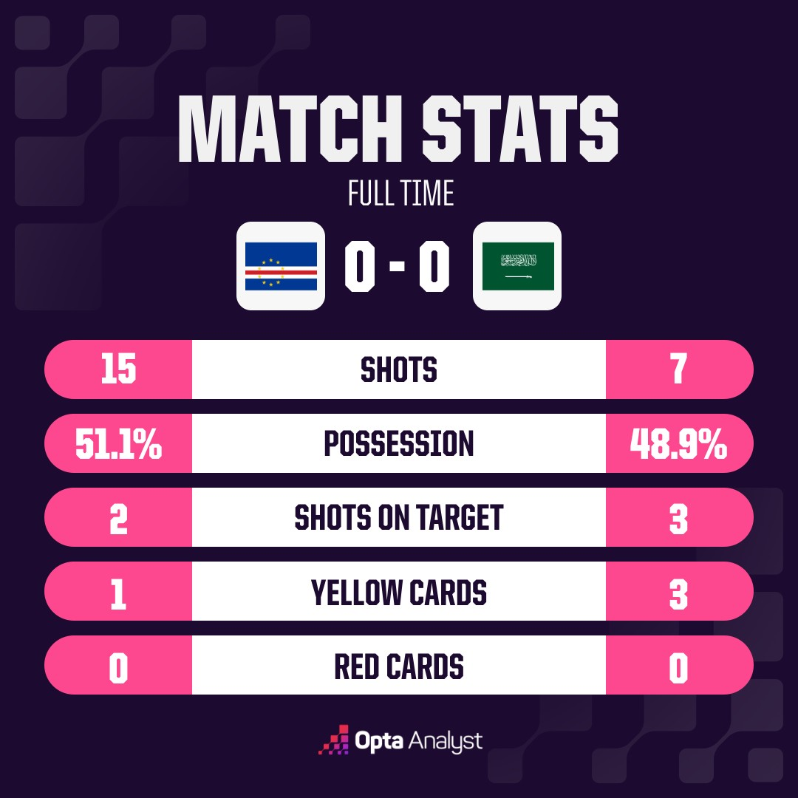
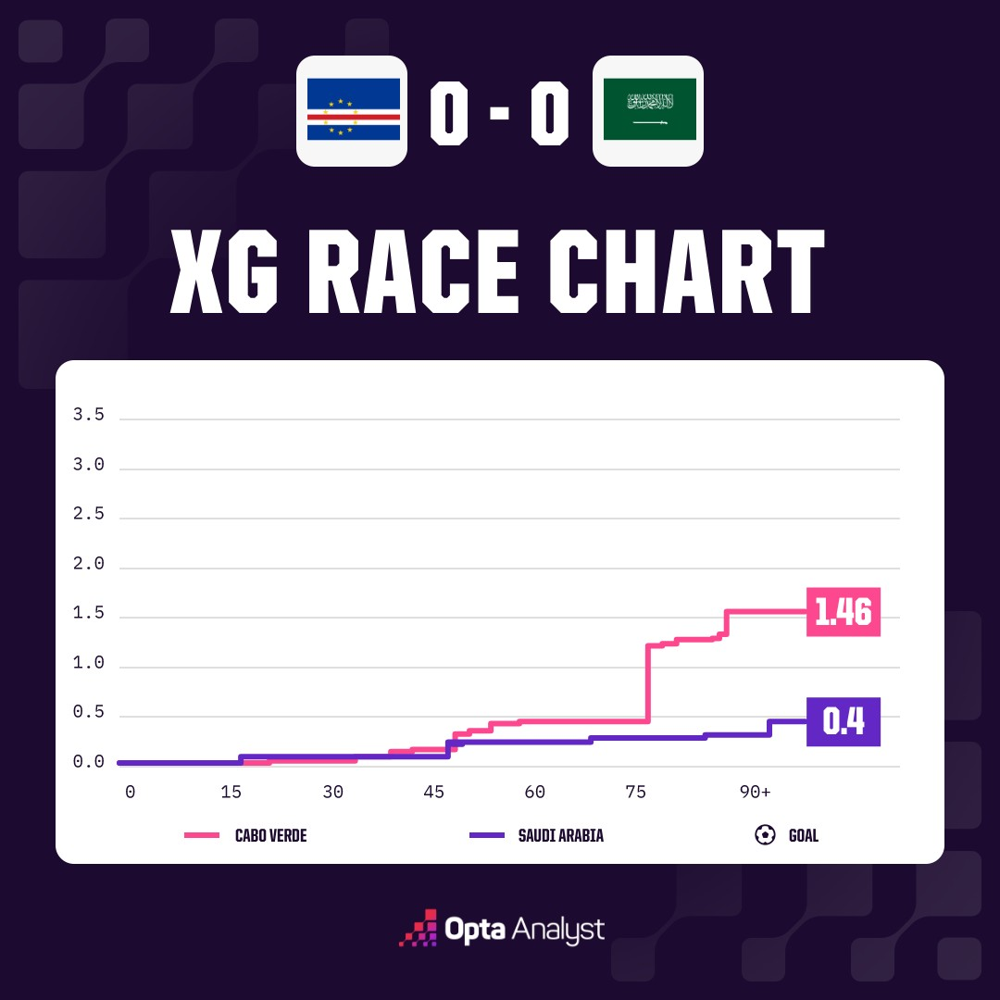
97'
Saudi Arabia have failed to win in their last 5 games in the FIFA World Cup, their last longer winless streak was from 3rd July 1994 to 20th June 2018, a run of 12 games.
97'
Cabo Verde have failed to win in their last 3 games in the FIFA World Cup, their longest winless streak in the competition (since at least 1965/1966).
97'
Cabo Verde are undefeated in their last 3 games in the FIFA World Cup, their longest unbeaten streak in the competition (since at least 1965/1966).
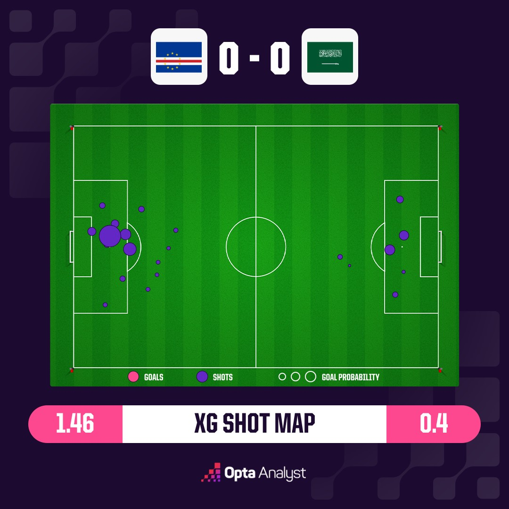
90+6'
That's it! The referee blows the whistle and we have reached full-time. The final score at Houston Stadium is Cabo Verde 0-0 Saudi Arabia.
90+5'
Saudi Arabia offside trap works a treat as they step up and catch Garry Rodrigues offside. Cabo Verde are searching for a goal, but their players will need to play smarter to keep themselves on the right side of the line.
90+4'
A substitution for Cabo Verde sees Wagner Pina replaced by Steven Moreira. There does not appear to be any obvious sign of an injury, so that is a tactical switch.
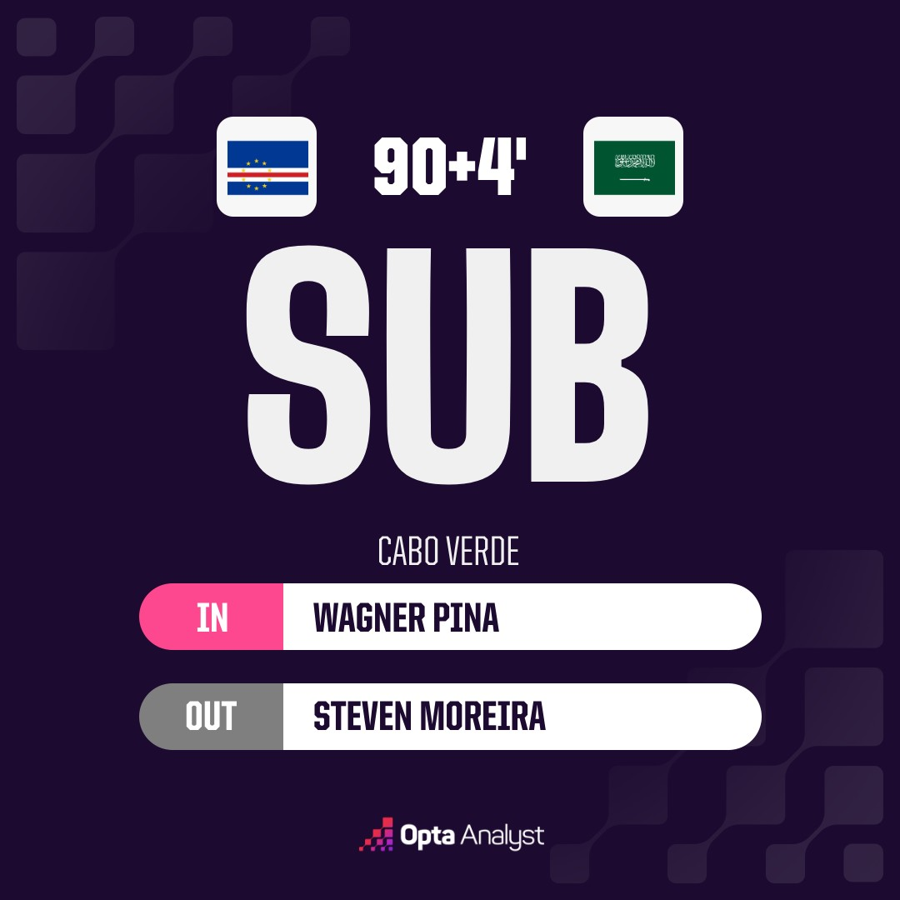
90+3'
BOOKING! Yellow card for Feras Al Brikan, who is penalised for a foul. The referee waves away their remonstrations, and now they will have to be careful.
90+3'
Feras Al Brikan goes in on João Paulo and concedes a foul. The free-kick is not in a particularly dangerous area from Saudi Arabia’s viewpoint, though.
90+2'
CLOSE! Abdullah Al Hamddan gets into a decent shooting position inside the Cabo Verde area, and manages to find space to get an effort off. However, Vozinha is equal to it.
90+1'
A foul from Mohamed Kanno on Kevin Pina sees Cabo Verde win a free-kick, but it is not in a dangerous position, so Saudi Arabia should be confident they can defend it easily enough.
90+1'
Saudi Arabia haven't let that first-half deficit affect their approach - another patient build-up sequence as they continue to probe for ways back into the game.
88'
VAR changes the decision! After a check, the video official believes the referee’s original call was wrong, and so the decision is overturned.
88'
We are going to VAR. The game has stopped for now with the assistant referee in the video booth now set to review the incident. Will the decision be altered?
86'
Saudi Arabia offside trap works a treat as they step up and catch Garry Rodrigues offside. Cabo Verde are searching for a goal, but their players will need to play smarter to keep themselves on the right side of the line.
86'
Great block from Abdulelah Al Amri, as they get in the way of an attempt from Wagner Pina that might have been set to cause the goalkeeper some problems. Solid defending from the Saudi Arabia player.
85'
A chance goes begging as Nuno da Costa gets off a shot that does not hit the target. They might have done better with that one, but instead it is a goal-kick to Saudi Arabia.
84'
MISS! A shot from Kevin Pina ends up being off target. They might have done a bit better with that one, but it remains Cabo Verde 0-0 Saudi Arabia.
84'
There is plenty of possession for Saudi Arabia, with 69.39% compared to Cabo Verde 30.61% in the last 15 minutes. However, Saudi Arabia have not been able to turn that dominance of the ball into a goal.
83'
BLOCKED! That was close. Nasser Al Dawsari got off a shot, which was heading in, but Pico Lopes was on hand to make a vital intervention. Great block!
83'
Plenty of the ball in the last quarter-of-an-hour of this match for Saudi Arabia, but Cabo Verde have been able to hold them off with ease, with Saudi Arabia having failed to even muster a shot at goal.
82'
A substitution for Saudi Arabia sees Nawaf Bu Washl replaced by Moteb Al Harbi. There does not appear to be any obvious sign of an injury, so that is a tactical switch.
81'
Abdullah Al Hamddan goes in on Pico Lopes and concedes a foul. The free-kick is not in a particularly dangerous area from Saudi Arabia’s viewpoint, though.
79'
BLOCKED! That was close. Garry Rodrigues got off a shot, which was heading in, but Nasser Al Dawsari was on hand to make a vital intervention. Great block!
78'
A rash challenge from Hélio Varela, who sends Saud Abdulhamid tumbling, giving Saudi Arabia a free-kick. It is not in a threatening position, but it gives them a chance to get back on the ball.
77'
BLOCKED! That was close. João Paulo got off a shot, which was heading in, but Ali Lajami was on hand to make a vital intervention. Great block!
77'
Free-kick! A foul from Abdullah Al Hamddan on Wagner Pina. It is well away from Saudi Arabia’s goal, so it is unlikely to result in a chance for Cabo Verde.
75'
MISS! The score remains 0-0, with Saudi Arabia relieved after Cabo Verde’s Pico Lopes goes for goal but sends their attempt off target. Not one to write home about, that one.
75'
MISSED! That is really poor from Laros Duarte, who fails to convert from a golden opportunity, with the goal gaping. Will Cabo Verde pay for their profligacy, or can they put that miss behind them?
73'
Can Saudi Arabia make this chance count? They have won a free-kick in a threatening position after a foul from Diney Borges on Feras Al Brikan. Will Cabo Verde's defence be tested here?
72'
Substitution! Garry Rodrigues replaces Ryan Mendes for Cabo Verde as the manager shuffles the pack. Can Garry Rodrigues make an impression as this match continues?
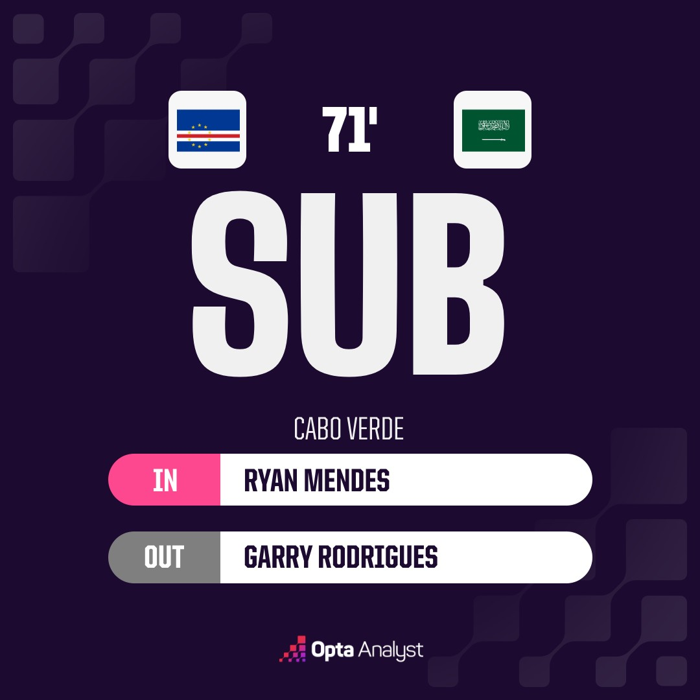
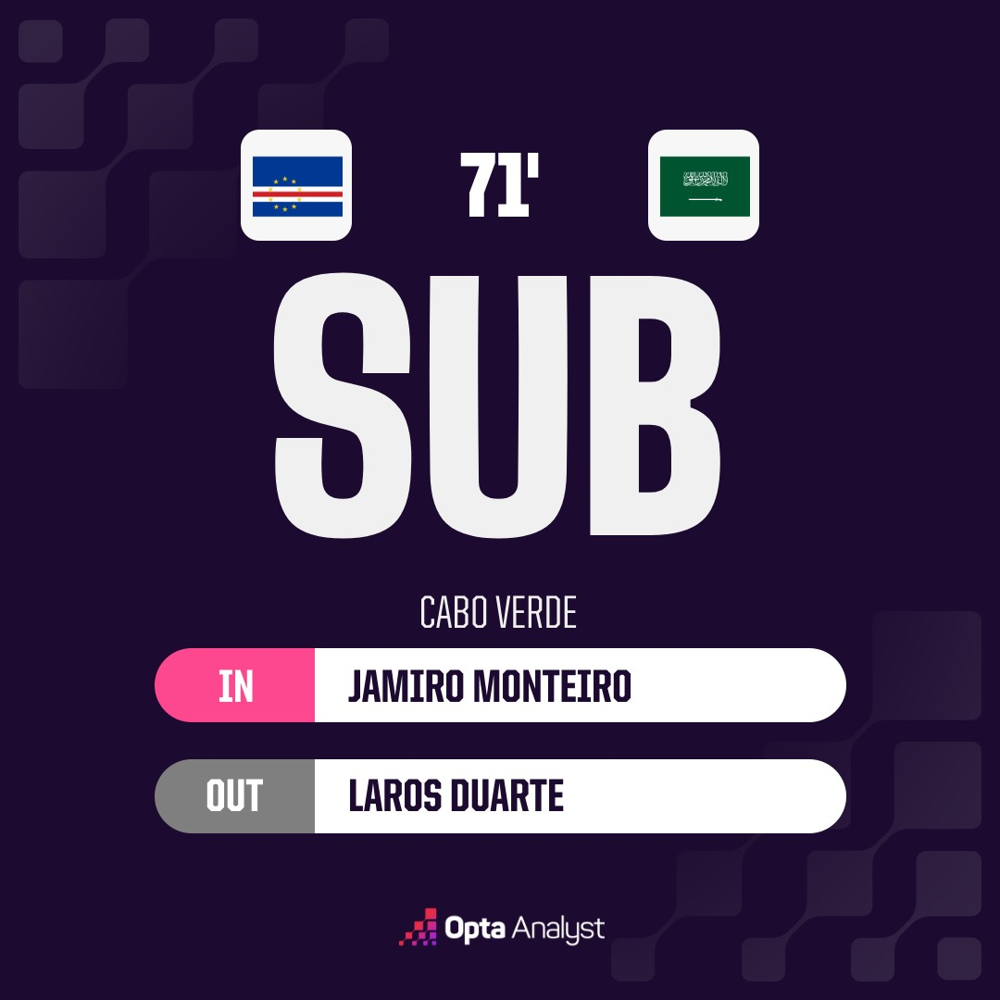
71'
The Cabo Verde manager is looking to the substitutes’ bench, bringing on Laros Duarte in place of Jamiro Monteiro. Will the change make a difference? Let’s find out!
69'
Cabo Verde have had plenty of the ball in the last 15 minutes, with 65.41% possession compared to just 34.59 % for their opponents. However, there’s not been any goal to come from that possessional dominance just yet.
67'
Yellow card! Nasser Al Dawsari will have to be careful from now on after they are cautioned.
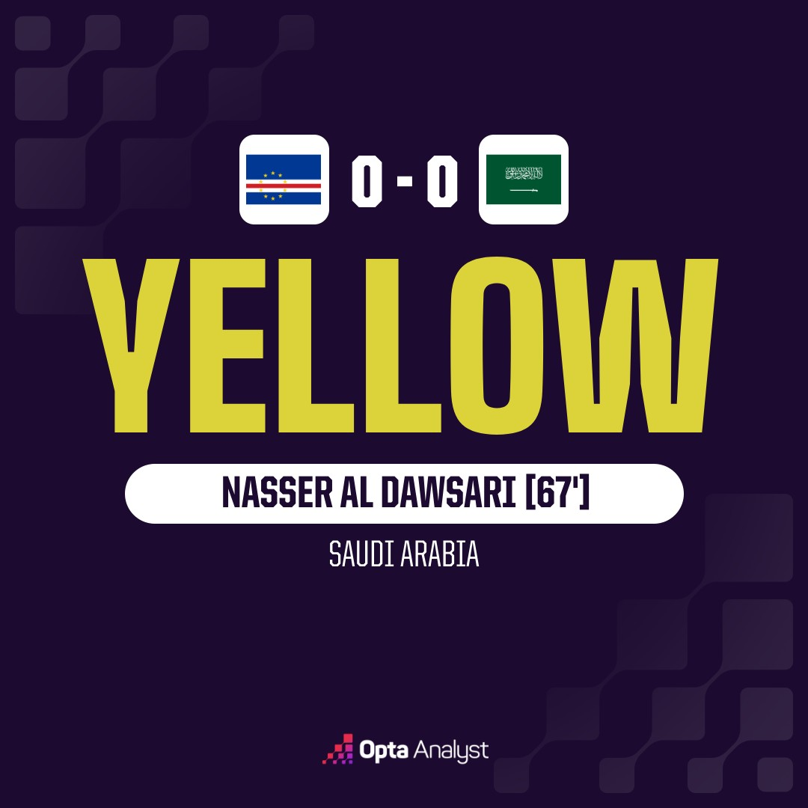
67'
Nasser Al Dawsari goes in on Nuno da Costa and concedes a foul. The free-kick is not in a particularly dangerous area from Saudi Arabia’s viewpoint, though.
67'
SHOT! Mohammed Abu Al Shamat manages to get a shot off from inside the area, but although it was heading in, they cannot get enough on it to beat Vozinha, who makes the save.
66'
A foul from Saud Abdulhamid on Hélio Varela sees Cabo Verde win a free-kick, but it is not in a dangerous position, so Saudi Arabia should be confident they can defend it easily enough.
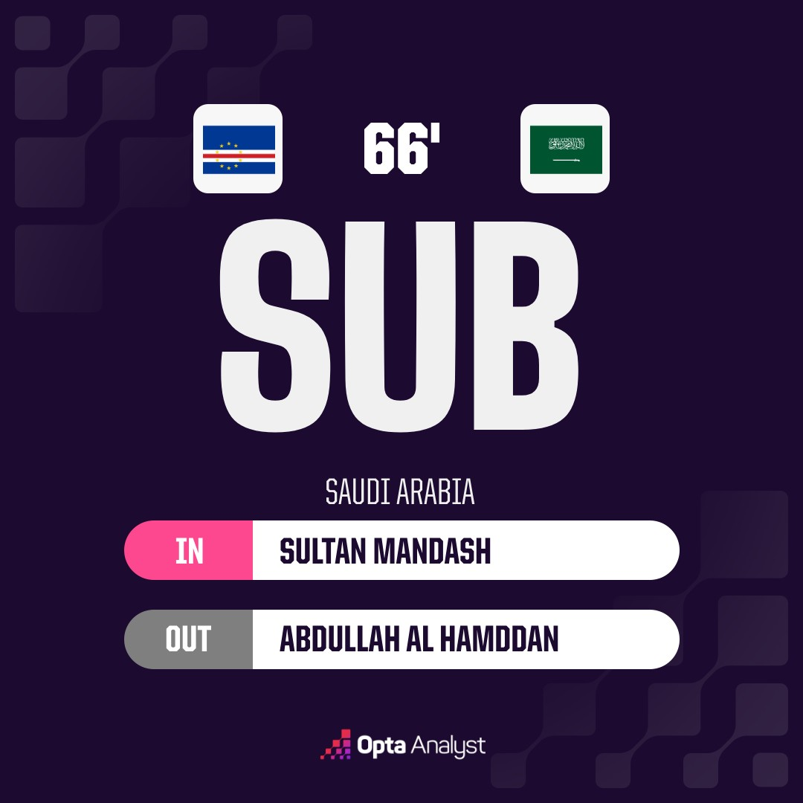
66'
A substitution for Saudi Arabia sees Sultan Mandash replaced by Abdullah Al Hamddan. There does not appear to be any obvious sign of an injury, so that is a tactical switch.
66'
Salem Al Dawsari’s match is over as Saudi Arabia decide to make a substitution. Mohammed Abu Al Shamat enters the field in what looks like a tactical change.
66'
With 25 minutes left to play, it’s a good chance to check in on the shot count. Saudi Arabia have mustered 4 so far, with 1 of those landing on target. On the other hand, Cabo Verde have gotten 8 of their 1 of attempts on target.
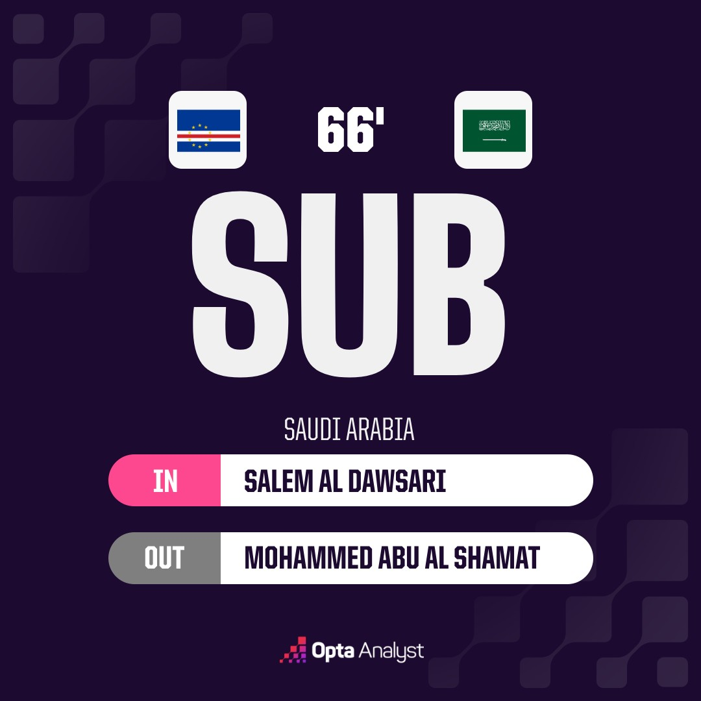
63'
A rash challenge from Kevin Pina, who sends Sultan Mandash tumbling, giving Saudi Arabia a free-kick. It is not in a threatening position, but it gives them a chance to get back on the ball.
61'
Willy Semedo’s match is over as Cabo Verde decide to make a substitution. Hélio Varela enters the field in what looks like a tactical change.
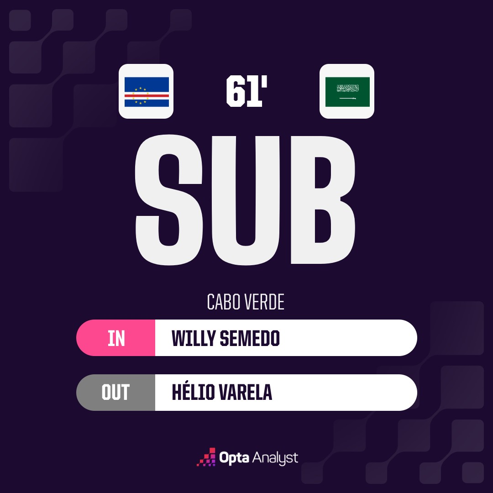
61'
Substitution! Nuno da Costa replaces Dailon Livramento for Cabo Verde as the manager shuffles the pack. Can Nuno da Costa make an impression as this match continues?
57'
MISS! A shot from Deroy Duarte ends up being off target. They might have done a bit better with that one, but it remains Cabo Verde 0-0 Saudi Arabia.
56'
Corner! The ball goes behind and now Cabo Verde will aim to deliver a good ball into the penalty area and test that Saudi Arabia defence, which has been frustrating them in recent minutes.
55'
Salem Al Dawsari goes in on Pico Lopes and concedes a foul. The free-kick is not in a particularly dangerous area from Saudi Arabia’s viewpoint, though.
53'
BLOCK! An intervention from Ali Lajami might have just prevented a goal, with the defending player getting in the way of an attempt from Ryan Mendes. Solid defending there!
50'
A chance goes begging as Kevin Pina gets off a shot that does not hit the target. They might have done better with that one, but instead it is a goal-kick to Saudi Arabia.
48'
CLOSE! Jamiro Monteiro gets into a decent shooting position inside the Saudi Arabia area, and manages to find space to get an effort off. However, Mohammed Al Owais is equal to it.
48'
A foul from Sultan Mandash on Willy Semedo sees Cabo Verde win a free-kick, but it is not in a dangerous position, so Saudi Arabia should be confident they can defend it easily enough.
47'
MISS! The score remains 0-0, with Cabo Verde relieved after Saudi Arabia’s Abdulelah Al Amri goes for goal but sends their attempt off target. Not one to write home about, that one.
46'
The Saudi Arabia manager is looking to the substitutes’ bench, bringing on Musab Al Juwayr in place of Abdullah Al Khaibari. Will the change make a difference? Let’s find out!
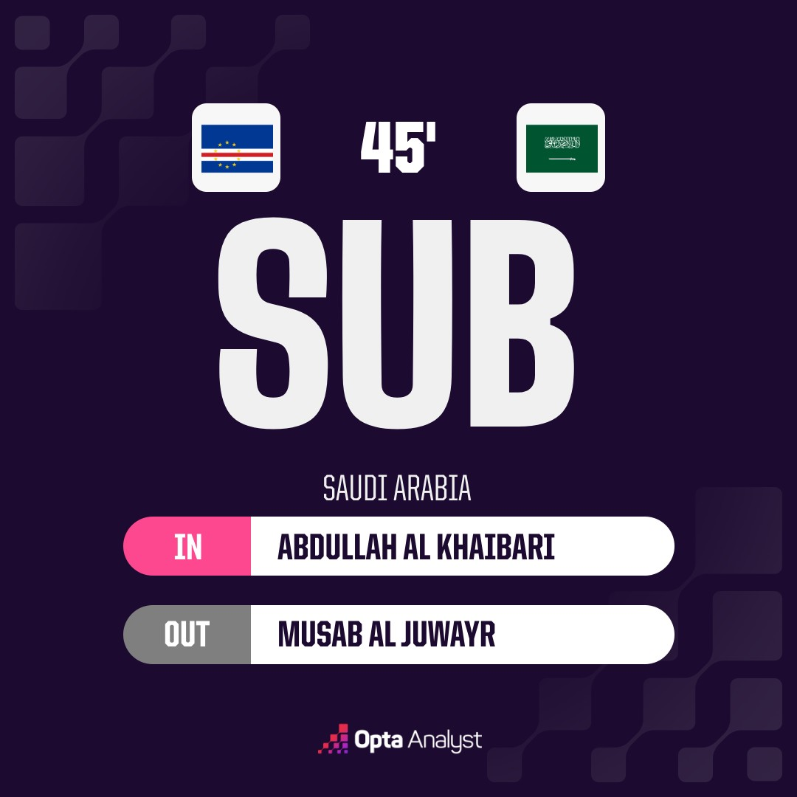
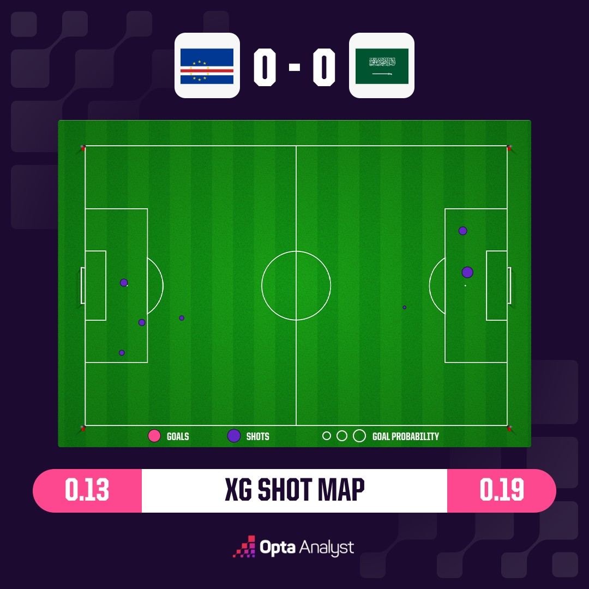
45+7'
Half-time! We reach the interval with the score level at 0-0 between Cabo Verde and Saudi Arabia. Will we see a winner in the second half?
45+4'
That might have been going in! A fantastic block from Willy Semedo, who gets in the way of a goal-bound effort from Saud Abdulhamid. Would the goalkeeper have been beaten? We will never know.
45+3'
Foul! A free-kick now in a dangerous area for Saudi Arabia, after Nasser Al Dawsari is fouled by Jamiro Monteiro. Can Saudi Arabia make the most of this opportunity?
45+2'
HUGE CHANCE GOES BEGGING! What a miss that is from Mohamed Kanno, who looked all set to score a goal that their team need, but instead fails to direct their attempt into the back of the net. That was a big, big opportunity for Saudi Arabia.
45+1'
A foul from Ryan Mendes on Abdullah Al Khaibari sees Saudi Arabia win a free-kick, but it is not in a dangerous position, so Cabo Verde should be confident they can defend it easily enough.
42'
That is a disappointing effort from Willy Semedo, who went for glory but got their attempt wrong, and the shot sailed off target. A frustrating moment for Cabo Verde.
41'
Cabo Verde have not had a shot on target so far in this game.
41'
Foul! A free-kick now in a dangerous area for Cabo Verde, after Wagner Pina is fouled by Nasser Al Dawsari. Can Cabo Verde make the most of this opportunity?
39'
OVERTURNED! VAR has decided to intervene here, and after that comprehensive check, the referee’s decision has been overturned.
39'
VAR is reviewing the incident. Will the decision stand, or will it be overturned?
39'
That is a disappointing effort from João Paulo, who went for glory but got their attempt wrong, and the shot sailed off target. A frustrating moment for Cabo Verde.
38'
Can Saudi Arabia survive here? They will have some defending to do after the ball is turned behind for a corner kick. Will Cabo Verde take this opportunity and grab the goal they have been pushing for?
37'
Free-kick! A foul from Mohamed Kanno on Deroy Duarte. It is well away from Saudi Arabia’s goal, so it is unlikely to result in a chance for Cabo Verde.
36'
A rash challenge from Salem Al Dawsari, who sends Wagner Pina tumbling, giving Cabo Verde a free-kick. It is not in a threatening position, but it gives them a chance to get back on the ball.
36'
A free-kick to Saudi Arabia, as Jamiro Monteiro goes in and fouls Ali Lajami. However, Cabo Verde will not mind giving one away in this area too much, with plenty of distance to their goal.
34'
Free-kick! A foul from Willy Semedo on Abdullah Al Khaibari. It is well away from Cabo Verde’s goal, so it is unlikely to result in a chance for Saudi Arabia.
34'
That might have been going in! A fantastic block from Sultan Mandash, who gets in the way of a goal-bound effort from Jamiro Monteiro. Would the goalkeeper have been beaten? We will never know.
33'
Substitution. Hassan Al Tambakti has to make way, with Ali Lajami coming on in their place following an injury. That is going to come as a blow for Saudi Arabia. Can they overcome it?
33'
Cabo Verde are having plenty of the ball, with 72.60% possession in the last 15 minutes. However, they have been unable to transfer that possessional dominance into a goal during that period.
33'
Neither team has had a shot in the past 10 minutes, as this match just enters something of a down period. Cabo Verde have seen more of the ball, with 72 per cent possession, but Saudi Arabia are keeping them away from goal. There is still a chance the match will spark into life, though.
28'
Nasser Al Dawsari goes in on Willy Semedo and concedes a foul. The free-kick is not in a particularly dangerous area from Saudi Arabia’s viewpoint, though.
22'
MISS! A shot from Willy Semedo ends up being off target. They might have done a bit better with that one, but it remains Cabo Verde 0-0 Saudi Arabia.
18'
This could be a chance for Saudi Arabia, after Kevin Pina fouls Nawaf Bu Washl, handing them a free-kick in a threatening area. A good set-piece from here could really test the Cabo Verde defense!
18'
Shot blocked! Salem Al Dawsari unleashes an attempt at goal, but the ball does not reach its target thanks to Wagner Pina, who makes a solid block to stem the danger – for now.
13'
Nasser Al Dawsari goes in on João Paulo and concedes a foul. The free-kick is not in a particularly dangerous area from Saudi Arabia’s viewpoint, though.
13'
It’s been tight so far, and Cabo Verde are making sure it stays that way with strong defensive discipline and well-timed clearances.
11'
Neither team has had a shot in the past 10 minutes, as this match just enters something of a down period. Cabo Verde have seen more of the ball, with 56 per cent possession, but Saudi Arabia are keeping them away from goal. There is still a chance the match will spark into life, though.
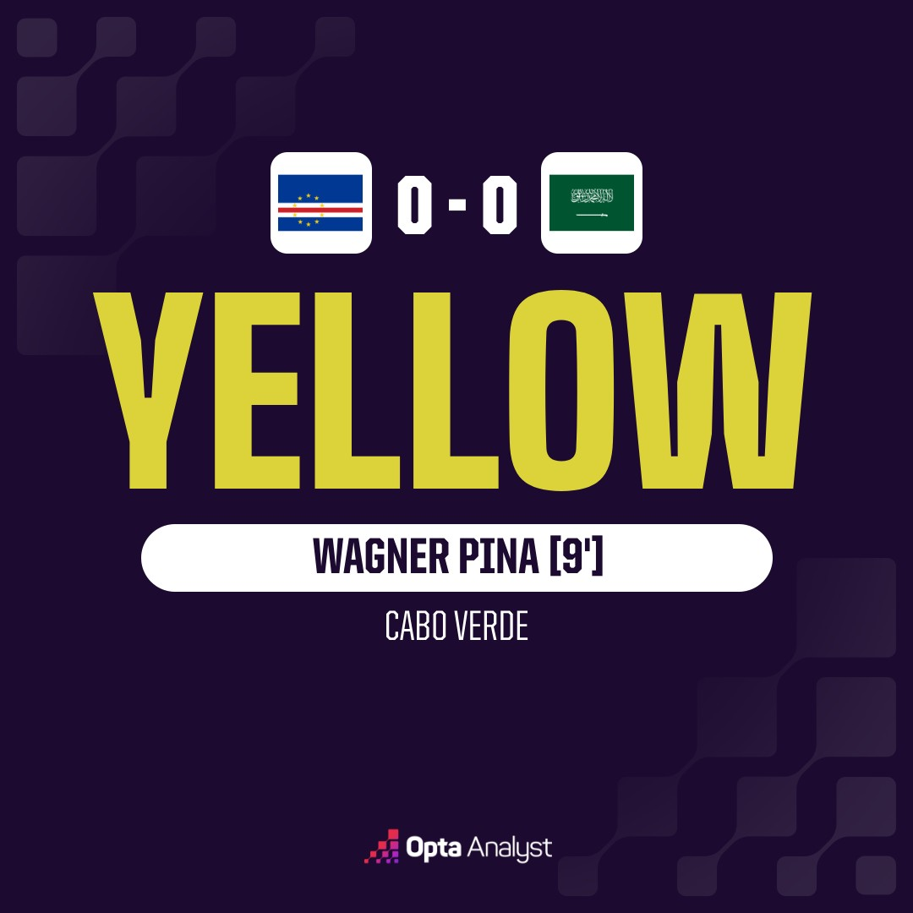
9'
BOOKING! Yellow card for Wagner Pina, who is penalised for a foul. The referee waves away their remonstrations, and now they will have to be careful.
8'
A foul from Wagner Pina on Salem Al Dawsari sees Saudi Arabia win a free-kick, but it is not in a dangerous position, so Cabo Verde should be confident they can defend it easily enough.
7'
A rash challenge from Willy Semedo, who sends Sultan Mandash tumbling, giving Saudi Arabia a free-kick. It is not in a threatening position, but it gives them a chance to get back on the ball.
7'
A free-kick to Cabo Verde, as Mohamed Kanno goes in and fouls Kevin Pina. However, Saudi Arabia will not mind giving one away in this area too much, with plenty of distance to their goal.
4'
That is a booking for Saud Abdulhamid, who has received their first yellow card. They are not happy with the decision, but it is done now, and they will have to be careful for the rest of this game.
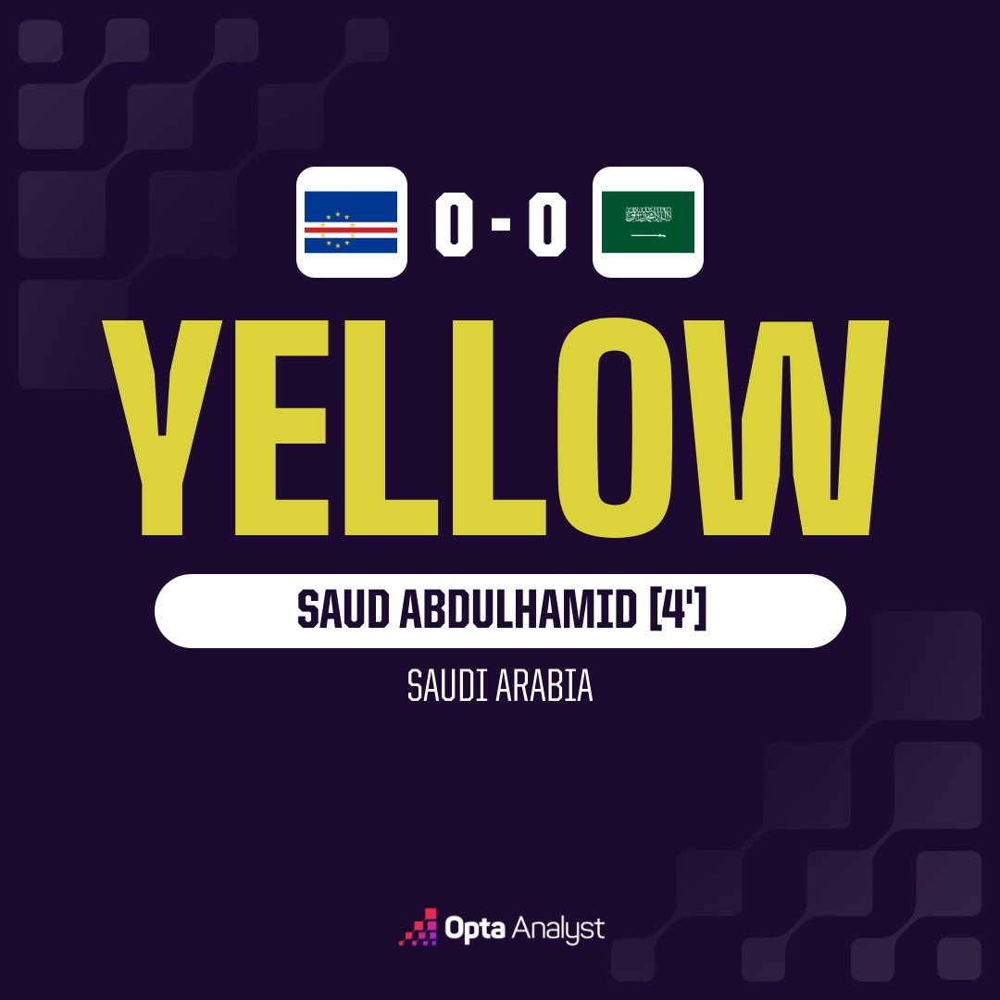
4'
A free-kick to Cabo Verde, as Saud Abdulhamid goes in and fouls João Paulo. However, Saudi Arabia will not mind giving one away in this area too much, with plenty of distance to their goal.
1'
Kick-off! Up and running at Houston Stadium, with Cabo Verde getting the ball rolling. Who will come out on top?
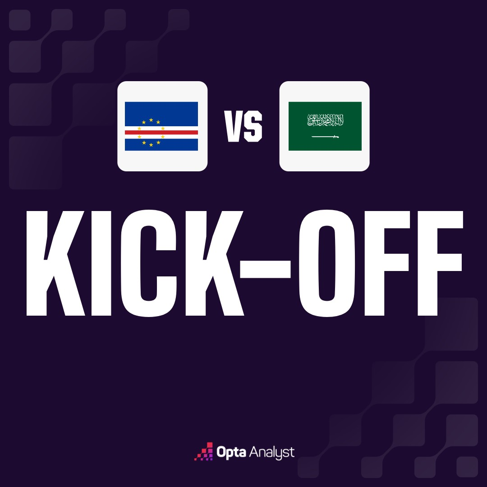
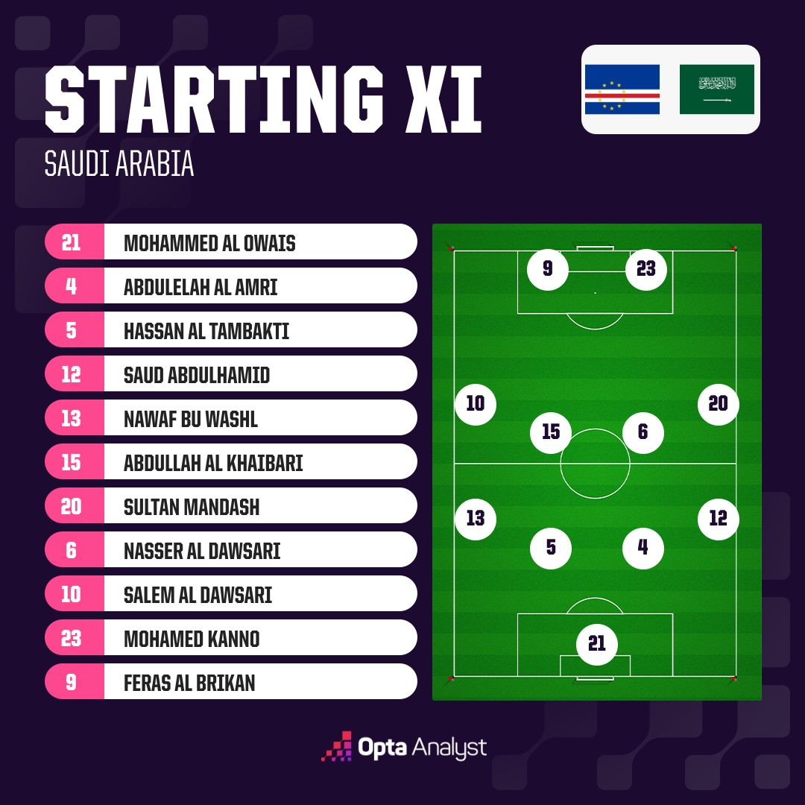
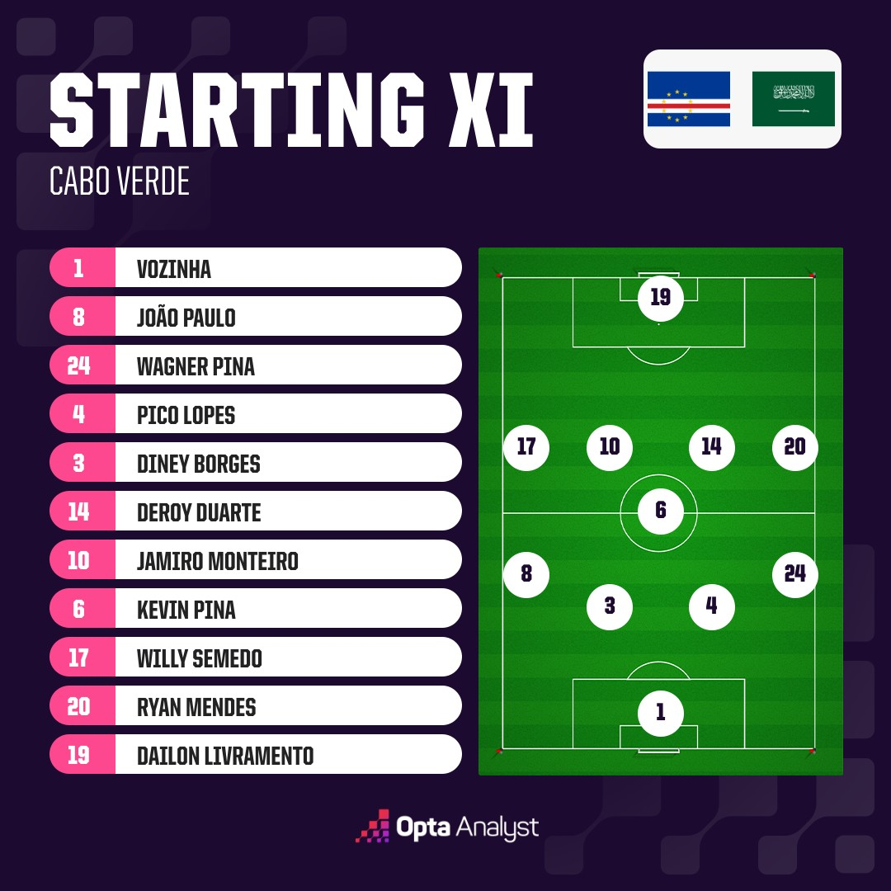
Saudi Arabia have won none of their last 6 matches
Cabo Verde will play Saudi Arabia on Friday at Houston Stadium in the third round of the group stage at the 2026 Canada/Mexico/USA FIFA World Cup.
Cabo Verde played out a 2-2 draw in their last group stage match against Uruguay on June 21. Kevin Pina and Hélio Varela netted in the draw. They are unbeaten in their last five games in all competitions. In six games this year, they have three wins, two draws, and one loss.
Saudi Arabia's last group stage game saw them beaten for the first time in the competition this year 4-0 by Spain on June 21 at Atlanta Stadium, prolonging their winless streak to three. In 2026, they have won one, drawn two, and lost four.
Cabo Verde are third in the group on two points, while Saudi Arabia's one point places them fourth. Cabo Verde are currently out of the knockout round places but still on for a place in the round of 32, while Saudi Arabia are in line to be eliminated.
Atop the group on four points are Spain, who are well-positioned to advance to the Round of 32. Uruguay are also in a Round of 32 spot, sitting second on two points.
Pina and Varela have proved attacking threats for Cabo Verde in World Cup play. The two players are the team's joint top scorers with one goal. Pina has scored the crucial first goal of the match once. Saudi Arabia's most productive player in attack has been Abdulelah Al Amri, who has scored once in this season's World Cup.
In their last six matches in all competitions, Cabo Verde have won three, drawn two and lost one. The Cabo Verde side scored 11 and conceded seven in that stretch, scoring first in three of the six contests. They had five first-half goals, while their opponents netted four times in the first 45 minutes. Saudi Arabia have won one, drawn two and lost three in their last six. The Saudi side scored six and conceded nine in that period, netting first in three of the six. They had three goals in the first half, while their opponents netted four times before the break.
-
General
Possession 51.0% 51.01848.98249.0% Possession lost in defensive half 32 323131 Possession lost in middle third 66 665959 Duels 116 116116116 Duels success rate 50.0% 5048.27648.3% Aerial duels 29 292929 Aerial duels won 62.1% 62.06937.93137.9% Successful dribbles 10 1066 Fouls won 16 161010 Offsides 2 200 Corner awarded 4 422 -
Distribution
Passes 451 451444444 Long passes 55 555050 Long passes proportion (%) 12.2% 12.19511.26111.3% Passing accuracy 84.5% 84.47980.85680.9% Passes in opponents' half 234 234230230 Passing accuracy in opponents' half (%) 78.6% 78.63271.30471.3% Total passes in the final third 122 122114114 Passing accuracy in final third (%) 70.5% 70.49262.28162.3% Forward passes 273 273297297 Forward passes (%) 60.5% 60.53266.89266.9% Through balls 2 200 Final third entries 56 566363 Penalty area entries 26 263131 Total open play crosses 13 1366 Crosses 18 181111 Crossing accuracy 11.1% 11.11127.27327.3% -
Attack
Goals 0 000 Shots 15 1577 Shots on target 2 233 Blocked shots 5 533 Headed shots 2 222 Shots outside the box 6 622 Shots inside the box 9 955 Shots accuracy excluding blocked shots 20.0% 207575.0% Shooting accuracy 13.3% 13.33342.85742.9% Key Passes 12 1255 -
Defence
Tackles 15 152929 Tackles success rate 80.0% 8051.72451.7% Clearances 29 292525 Interceptions 13 131111 Recoveries 52 524343 Attacking third recovery 6 677 Defensive third recovery 26 262424 Midfield third recovery 20 201212 Recoveries in attacking half (%) 11.5% 11.53816.27916.3% -
Discipline
Fouls conceded 10 101616 Yellow cards 1 133 Red cards 0 000